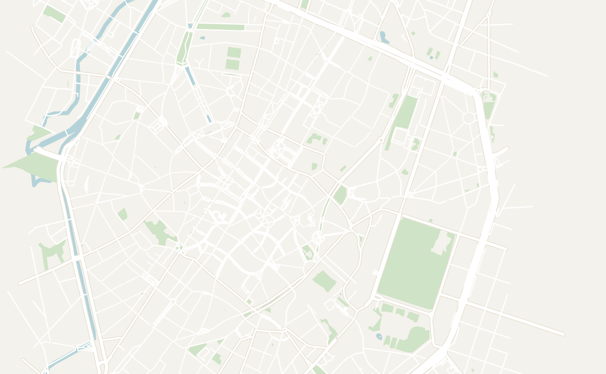
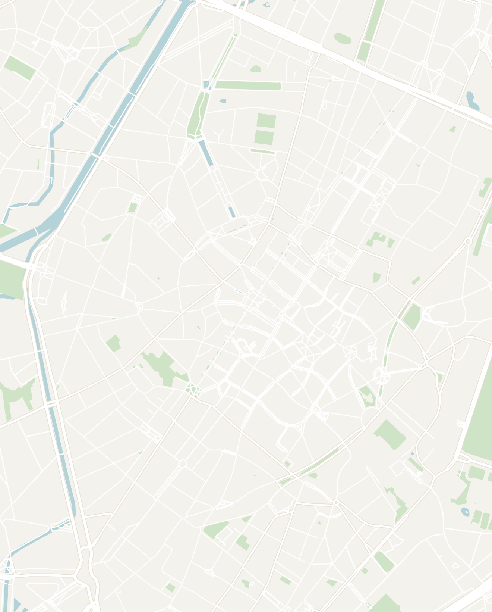
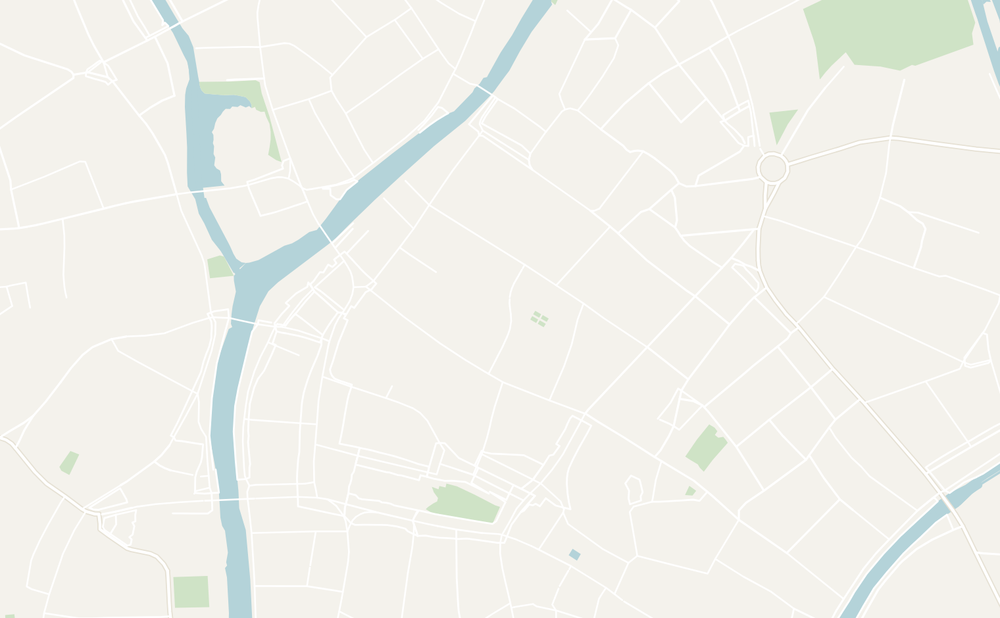
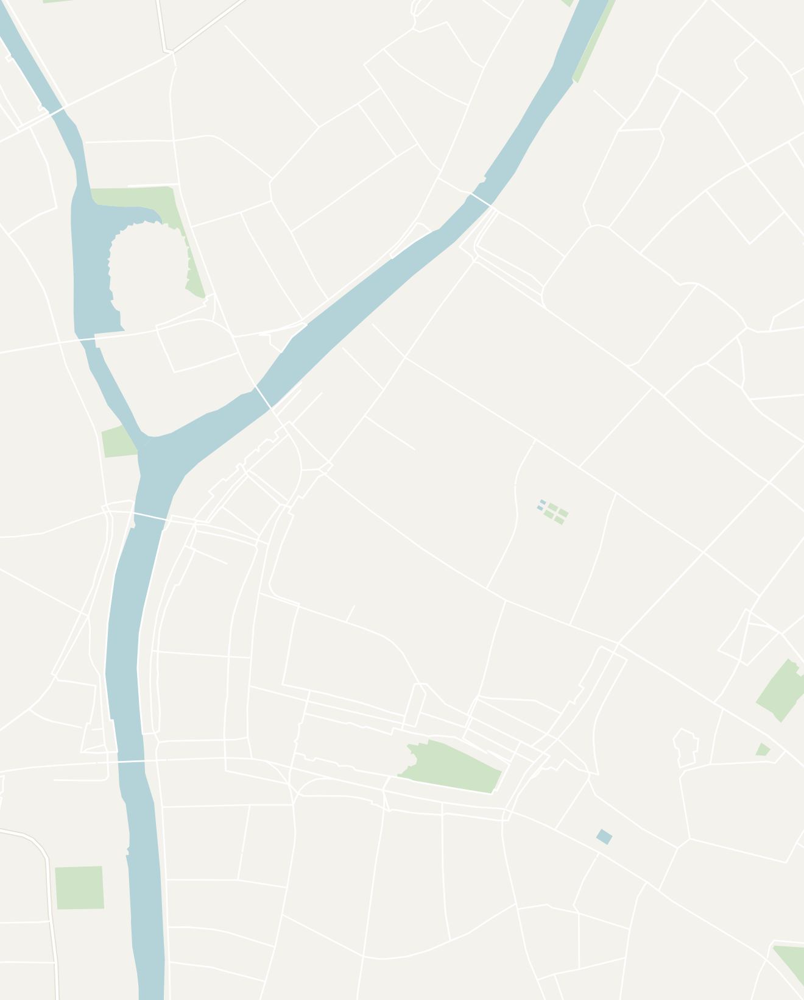
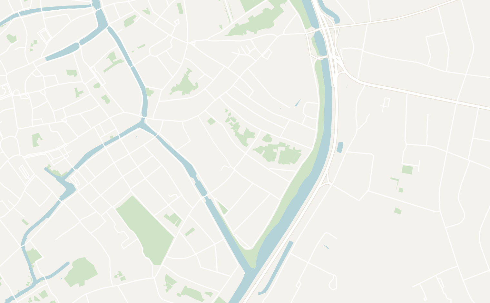
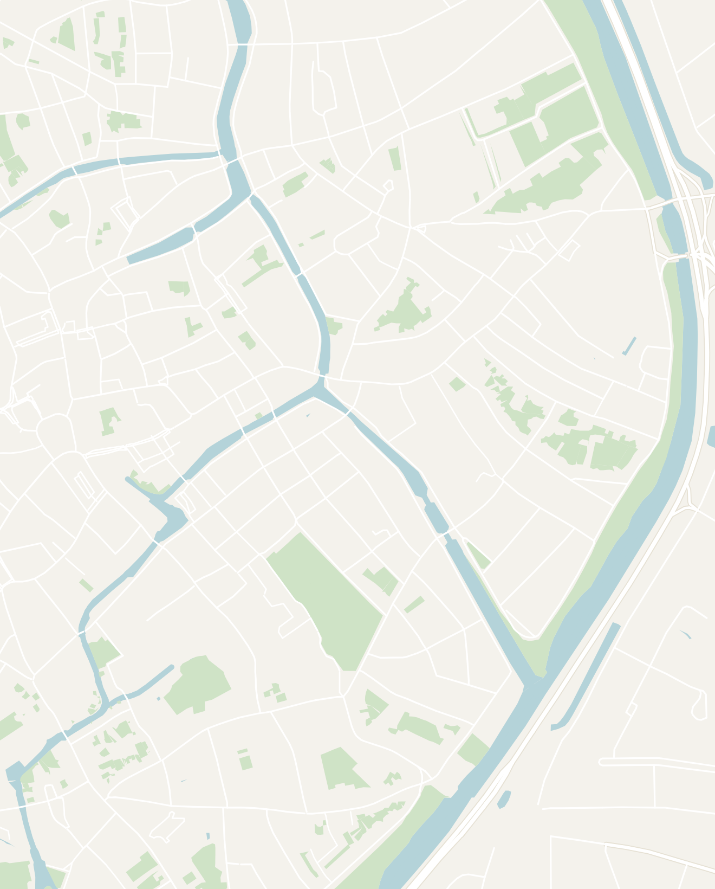

General
Belgium is one of the countries that surprised me the most in Europe. After having visited the Netherlands and France, I had low expectations for Belgium which were completely blown out of the water. Belgium is a tiny country sandwiched between the Netherlands, France and Germany that is divided into two distinct regions: the Dutch-speaking Flanders in the North and the French-speaking Wallonia in the South.
It is extremely easy to get around due to its size and extensive train network. You can see the highlights in under a week without ever renting a car. Prepare to be amazed by the immaculate medieval cities, the best beer and chocolate in the world, and (in my case) the biggest music festival on the planet.
I would recommend spending 5 to 7 days in Belgium to see the highlights. The cities are compact and close enough that you can base yourself in one and day-trip to the rest.
- Getting around
- Trains — Belgium is tiny and only takes around 3 hours to drive from end-to-end. The size of the country and the excellent rail network makes nearly every city under an hour apart. Additionally, there are also international trains that connect Belgium to neighboring countries like the Netherlands (Amsterdam is about two hours from Brussels by direct train), France and Germany
- Flights — if you're coming by plane, you'll likely fly into Brussels Airport which is one of the busiest airports in all of Europe
- Money — the Euro is the official currency. I found Belgium to be mid-priced for Western Europe and prices were largely in-line with its neighbors France & Germany
- Food & Beer — Belgian food is insanely underrated. I mean who doesn't like fries, chocolate and beer?? The food was surprisingly good and was a genuine highlight for me. Although the cuisine is familiar, don't forget to try: the waffles (both the fluffy sugar-studded Liège waffle and the crisp rectangular Brussels waffle), Belgian fries (French fries were actually invented in Belgium), a pot of mussels, stoofvlees (tender beef stewed in dark beer) and some of the best chocolate on earth.
- Don't forget the beer! Belgium had some of the widest variety of beer that I had ever seen, from Trappist ales brewed by monks to sour lambics, each poured in its own branded glass. One of the bars I went to in Bruges called 2be Shop, offered more than 1,000 Belgian beers
- Language — Linguistically, Belgium is a unique country with two widely spoken official languages: Dutch (Flemish) in the north (Ghent, Bruges, Antwerp), French in the south and both languages in Brussels. English is very widely spoken so you'll have no trouble getting around
Brussels
1 to 2 days recommendedBrussels is the compact, slightly quirky capital, anchored by one of the grandest squares in Europe and full of beer, chocolate and comic-book history. It gets a bit overshadowed by the prettier canal cities, but it's worth a day or two and makes an easy base for day trips to Ghent and Bruges.
Brussels has a slightly rough, workaday edge next to the fairytale Flemish towns, but it's central, well-connected and cheaper, which makes it a practical hub for the whole country
- Grand-Place — Brussels' breathtaking central square and one of the most beautiful in Europe. The compact square is surrounded by some of the most intricate and ornate architecture that I saw in Europe. The highlights are the Gothic and Baroque guildhalls and the soaring Town Hall. It can get very busy during the day so visit early in the morning or after dark to experience it without the crowds
- The main attraction was the magnificent facades of the buildings surrounding the square. You can also visit inside at the Brussels Town Hall or many museums located on Grand-Place like the Brussels City Museum or Belgian Brewers Museum
- Manneken Pis & friends — yes, one of the most famous things to do in Brussels is a tiny statue of a peeing boy. The Belgians have a unique sense of humor and it is hilariously anticlimactic. The area is usually packed and he is often dressed in one of his hundreds of costumes. Make it into a full scavenger hunt and track down his lesser-known friends, a peeing girl (Jeanneke Pis) and a peeing dog (Zinneke Pis) around the town center
- Belgium is the home of the comic strip and the birthplace of beloved comic characters like Tintin, The Smurfs, and Lucky Luke. It's woven right into the city on giant comic murals you'll spot on walls all over the center. There are quite a few places celebrating the iconic character around the city that you can visit:
- Belgian Comic Strip Center — nowhere celebrates that legacy better than this museum, housed in a beautiful Art Nouveau building designed by Victor Horta. It's an excellent introduction to Belgium's comic culture and artistic heritage.
- The House of Comics — a small, free gallery and shop near the Grand-Place showcasing original comic artwork, figurines, and prints. It's a quick and worthwhile stop that complements the nearby Comic Strip Center
- The Tintin shop — the official Tintin store, filled with books, collectibles, and memorabilia celebrating Belgium's most famous comic hero. If you grew up reading Tintin comics like me, this is an absolute must when you're in Brussels
- Tintin Comic Mural — one of more than 50 comic murals scattered across Brussels, depicting Tintin, Snowy, and Captain Haddock climbing down a fire escape. Hunting down these murals is a fun way to spend the afternoon
- Smurfs Passage — a colorful covered walkway celebrating the Smurfs, created by Belgian cartoonist Peyo in 1958. It's a quick detour near Brussels Central Station and part of the city's comic mural trail.
- St Michael & St Gudula Cathedral — Brussels' magnificent Gothic cathedral, known for its soaring twin towers, impressive stained-glass windows, and peaceful interior. Just a short walk uphill from the Grand-Place, it's a welcome escape from the crowds below
- WAFFELIN — the waffle stand we kept going back to, just a block away from the Grand-Place. Order the Brussels waffle and get it loaded with a variety of toppings. It only cost a few euros and was genuinely one of the best things I ate on the whole trip
- Delirium Café — a sprawling multi-floor bar dedicated to the world-famous brewery Delirium (the pink elephant logo). It lies down a little alley right off the center of town and once held a world record for the most beers on tap (over 2,000). A rite of passage for a first Belgian beer night and the sheer selection of beer is fun to explore
- Base yourself near the Grand-Place: the center of Brussels is compact, so everything worth seeing is walkable, and you're minutes from the main stations for easy day trips out to Ghent and Bruges
- MEININGER Bruxelles City Center — a big, clean hostel-hotel hybrid that is about a fifteen minute walk from the Grand-Place. It offers private rooms and dorms, a proper breakfast buffet and a bar downstairs. The amenities were clean and it is very social without being a party hostel


Double-tap to open in Google Maps
Ghent
2 day recommendedGhent is Belgium's hidden gem: a lively medieval canal city that combines all the architectural beauty of Bruges with a younger, more authentic atmosphere thanks to its large student population. Grand guildhalls, winding canals, and towering churches are balanced by buzzing cafés, bars, and a vibrant local scene, making it feel far less touristy than its famous neighbor.
Ghent's old town felt like a medieval town out of a fairytale. If you only have time for one of Belgium's historic canal cities, I'd recommend choosing Ghent over others. Better yet, almost all of the city's highlights are concentrated within the compact old town, making it easy to explore on foot in as little as 1 or 2 days.
- Old Town — Ghent's old town is centered around the canal. You can even plan your trip around the canal itself starting with:
- St Michael's Bridge — the single best vantage point in Ghent where in one spot you can see all three medieval towers (St. Nicholas, the Belfry and St. Bavo) line up behind the guild houses along the canal. It is absolutely breathtaking and the perfect place to get your bearings before moving on
- On both sides of the canal lay two famous streets named Graslei and Korenlei. These twin medieval streets face each other across the old harbor in the heart of Ghent. They are both lined with a gorgeous row of stepped-gable guild houses and reflect in the water
- The Towers of Ghent — once a booming trade hub in Western Europe due to its canals. Ghent had one of the best skylines in Europe for centuries. If you have time, I'd recommend exploring all the towers and be sure to climb to the top for some magnificent views of the city:
- Belfry of Ghent— the city's 14th-century medieval bell tower and one of Belgium's best belfries, crowned by its iconic gilded dragon. Take the elevator to the upper levels to see the historic carillon bells and the massive rotating drum that once controlled their melodies, then descend via the winding staircase while enjoying panoramic views over Ghent's medieval rooftops. Visit near the top of the hour to hear the bells ring
- Saint Bavo's Cathedral — Ghent's magnificent Gothic cathedral is home to the Ghent Altarpiece(The Adoration of the Mystic Lamb) which is considered one of the greatest masterpieces of the Northern Renaissance. It is also one of the most stolen works of art in history. It was famously stolen by the Nazis and recovered by the famous "Monuments Men" troop. Watch the 2014 movie with George Clooney and Matt Damon before you go!
- St. Nicholas' Cathedral— one of Ghent's oldest landmarks and the first of the city's famous Three Towers. It was financed by the powerful medieval merchant guilds and has a more understated interior than neighboring Saint Bavo's Cathedral. If you're trying to choose between the cathedrals, I'd probably skip this one as it is the least flashy of the three
- Gravensteen Castle — built in 1180 as the fortress of the Counts of Flanders and remains one of Europe's best-preserved medieval castles. Complete with battlements, towers, dungeons, and a collection of medieval torture devices, it offers a fascinating glimpse into life in the Middle Ages
- I'm not normally a fan of audio guides, but the English guide offered at Gravensteen Castle is narrated by a Belgian comedian, is one of the best I've encountered and makes the visit genuinely entertaining.
- Afterwards, wander the cobbled streets of the nearby Patershol district, one of Ghent's most charming neighborhoods, filled with cozy cafés and excellent restaurants
- Ghent Festival — one of Europe's largest festivals, held over ten days every July and attracting more than a million visitors. The entire historic center transforms into a giant open-air celebration with free concerts by world-class DJs, street performances, theater, food stalls, and late-night festivities
- If your dates are flexible, it's well worth planning your trip around the festival, but book accommodation well in advance, as hotels and hostels fill up quickly. Unfortunately, it overlapped with Tomorrowland the year I was there and I arrived the day after it ended
- Vrijdagmarkt — the large town square that has served as Ghent's meeting and market ground for centuries and still runs a market on Fridays and Saturdays. The square is ringed with cafe terraces and is a good place to sit for an hour. Don't miss the magnificent statue of Jacob van Artevelde at the center of the Vrijdagmarkt
- Graffiti street — a narrow alley off the Werregarenstraat covered in graffiti. To be honest, it's a very short alleyway and I walked through it in a couple of minutes. It is only thirty seconds off the route between the Belfry and Gravensteen Castle so worth the detour if you're interested in checking it out
- Souplounge — a cheap, fast soup counter located right off of Graslei. It is popular among locals for good reason: a few euros gets you a big bowl with bread, fruit and a roll. It isn't a fancy spot, but really hit the spot on a rainy day for me
- Hostel Uppelink — one of the coolest hostels I've stayed in, located in a historic medieval house right on the Graslei. My room even had a view looking straight out at St Michael's Bridge and the towers.
- The dorms are basic and the stairs are steep and medieval, but you are paying for the view and the prime location. There is a bar downstairs and they run walking tours from reception. Book ahead in summer, and ask for a canal-facing room when you do


Double-tap to open in Google Maps
Bruges
2 days recommendedBruges is Belgium's most famous medieval city (and recently made more famous by the movie In Bruges). It is a remarkably well-preserved network of canals, cobbled streets and stepped-gable houses concentrated around a compact historic center.
It's undeniably touristy, but there are so many amazing sights to see here. I would recommend spending 2 days to explore this wonderful town.
- Church of Our Lady — one of Bruges' defining landmarks that took roughly 200 years to complete, dating back to as early as the 9th century. Inside are the elaborate tombs of Mary of Burgundy and Charles the Bold, but the star attraction is Michelangelo's white marble Madonna and Child. During World War II, Nazi forces stole the statue and hid it in an Austrian salt mine, where it was discovered and recovered by the Monuments Men in 1945 before being returned to Bruges (watch the George Clooney & Matt Damon movie before going!)
- Market Square — the main square of Bruges, surrounded by guild houses and anchored by the Belfry
- Belfry of Bruges — the mighty medieval bell tower rising over the Market Square. There is a 366-step climb up a narrowing spiral for the best view over the whole town of red roofs and canals. The view was amazing and Bruges is so picturesque that it felt like I was staring over a model town. On the way up, you'll pass a 47-bell carillon that goes off every hour
- There is a small daily market with the biggest being on Saturday morning. Take a quick stroll through the market for fruit, flowers and hot food. I highly recommend the rotisserie chicken and potatoes which were amazing
- Rosary Quay — the single most photographed spot in Bruges, and rightly so: a bend in the canal where stepped brick gables, a turret and the belfry beyond all stack up and reflect in the still water. There are beautiful willow trees here and many little boats go throughout here during the day. Time it for early morning or golden hour when the light turns everything amber. This is also where the canal boat tours push off, which are also worth doing if you haven't done them elsewhere in Belgium
- Fish Market — a small colonnaded market just off the Rosary Quay where fish has been sold since the 1820s. There are only a handful of stalls left and it is quiet outside the mornings, but the area itself is lovely. Go in the morning if you want to watch fish trading, but note that most stalls shut by early afternoon and all day Monday
- De Burg — the second of the two central squares and the older one, a quieter counterpart to the Market Square a minute away. It is home to some of the most impressive architecture in Bruges including the Basilica of the Holy Blood and the gothic City Hall side by side. This was the site of the original ninth-century fort the city grew out of
- Basilica of the Holy Blood — a small, but extraordinary two-level church tucked into a corner of the Burg square. It is a striking building with two distinct parts: a plain, ancient Romanesque lower chapel from the 1100s with an ornately painted upper chapel guarding a venerated relic said to hold drops of Christ's blood, brought back from the Crusades. It's free to enter, and on certain days you can join the queue to see the relic up close. It was one of my favorite sites to visit in Bruges and different from most other churches you'll visit
- Bruges City Hall — one of the oldest town halls in Belgium dating back to the 1370s. The outside of the building has an ornate Gothic facade covered in statues and gold detail. I only saw it from the outside, but you can also visit the Gothic Hall upstairs with its painted vaulted ceiling
- Kruispoort Gate — one of the surviving medieval city gates on the eastern edge of the old town. Four of the original nine gates survive, and one of the windmills still grinds flour in summer
- The city center tends to get crowded, especially during the day with tourists and day trippers. The edge of town where Kruispoort Gate lies is a peaceful escape from the crowds. There is a peaceful canal path here lined with huge old windmills. It is about fifteen minutes from the Market Square, almost entirely free of tourists, and easily my favorite walk in Bruges
- 2be Shop — a beer shop and canal-side bar with a wall of more than a thousand Belgian beers. The terrace out back over the water is the real draw and one of the prettiest places to drink in the town
- Bauhaus — the bar attached to the St Christopher's Bruges (where I stayed), and the liveliest place in Bruges after dark. There are cheap pints, a mixed crowd of travelers and locals, and it stays open when everything in the center has shut. The locals actually come to hangout here so it is a great opportunity to make friends. I had an unforgettable Karaoke night singing Green Day with a group of locals from Bruges
- Stay inside the old-town canal ring if you can: Bruges runs on day-trippers, so the real magic is in the evening and early morning when the coach crowds are gone and you almost have the town to yourself. It's small enough that anywhere central is walking distance from everything, and staying a night (rather than day-tripping) is what makes the town worth the trip
- St Christopher's Bruges - The Bauhaus — a cozy hostel located on the far end of town. The accommodation was nice and the atmosphere is extremely social. The hostel is right next door to the most popular bar in town called The Bauhaus which made it very social. I had a fun couple of nights here meeting backpackers from all over the world and also locals from Bruges who were also very friendly. I had no trouble sleeping on the nights when I wanted to go to bed early too.


Double-tap to open in Google Maps
Tomorrowland
late July · advance ticketsAs a huge music festival fan, Tomorrowland was one of the most incredible experiences in my life. The main Tomorrowland festival is the largest music festival in the world and the production is fantastic. They basically build an entire village every year in the town of Boom, Belgium (a tiny town between Brussels and Antwerp). It is hosted every year in late July with slightly different dates each year. In 2026, there were two weekends: July 17–19 and July 24–26.
The organizers go all out on the decorations, acrobats, stages and invite all of the best Electronic music artists from all corners of the world. You feel like you're in fantasy land and I'd highly recommend it to ANYONE even if you don't listen to Electronic music.
Tickets are notoriously hard to get and sell out in minutes, so you need to buy months ahead. By that, I mean wait online and keep refreshing the sites the second the tickets are released. I'll go into detail about accommodation later, but the DreamVille camping tickets give you the full experience, while regular tickets get you the day and evening sets.
- You first need to decide on your accommodation. There are two main ways to do Tomorrowland: either camping or commuting in each day from Antwerp:
- DreamVille Camping — the experience camping at Tomorrowland was unmatched: the facilities were incredibly clean, it was cool being able to walk to the festival grounds every morning, and we had some really cool neighbors that we hung out with. On-site camping at Tomorrowland is called DreamVille. The big perk of staying in DreamVille regardless of tier is access to The Gathering, an exclusive Thursday night party with surprise headline DJs that non-campers cannot attend. DreamVille Camping comes in three main tiers:
- Magnificent Greens — the traditional bring-your-own-tent option and the most social, with the most freedom to choose your spot. This will run you €370–430 per person including the ticket
- Easy Tent — the most popular option where your tent is pre-pitched and ready when you arrive, with sleeping arrangements and essential accessories included. There are multiple Easy Tent configurations for 2 or more people at different price points. I did this option personally and it was a life-saver not having to carry camping gear on a longer Euro Trip. This will cost €600–700 per person for a standard 2-person unit, rising to €800–900 for the Spectacular version including the ticket
- Montagoe — the most premium tier, a glamping-style option with more comfort and amenities for those who want a softer festival experience, includes a pool, hot tubs and its own bar. Montagoe is the most expensive tier which starts €1,000+ including the ticket
- Commuting from Antwerp — a viable alternative to camping if you want a proper bed and a base to explore Belgium. Belgian Railways (SNCB) runs a special Tomorrowland Event Train Ticket which you can buy using a unique code from your Tomorrowland account
- A direct train from Antwerp Central to Boom takes about 30 minutes and runs every 30 minutes, costing €3–8 each way. Antwerp is probably the best base given the frequency and speed of the train
- Expect hotel prices in Antwerp to be slightly inflated, but it didn't seem to be that much more expensive than usual
- If you choose this option, you'll have to buy tickets separately which will run you €138 for a day pass and €327 for a weekend pass
- Boom sits between Brussels and Antwerp and the simplest way in is the official shuttle bus. Shuttles run from Antwerp, Brussels or even directly from Brussels Airport. The official shuttles are worth booking alongside your ticket and are reasonably priced at around €40 roundtrip
- Whichever way you arrive, there is a short walk at the other end. You'll have to walk about twenty minutes with all your luggage if you're camping. Coming out at the end, the same buses run back to Brussels, and you will want the earlier one rather than the last
- DreamVille is the name of the festival grounds which runs like a small town: there is a common area where we ate and played cards through the slow afternoons, the food court out on its wooden deck, a merch store, and showers that pipe EDM at you while you're in them, which tells you everything about the place
- Walk out to the Magnificent Greens and there's a yoga class, a gym, tennis courts and a farmhouse breakfast spot, none of which I expected from a campsite. The mornings are the good part: everyone surfaces slowly, the music is already going somewhere in the distance, and you hear five languages before you've finished eating
- I've been to 15+ music festivals and the stages at Tomorrowland are on another planet compared to any other festival. We spent the first day wandering from stage to stage, just checking out how they were decorated. You'll have plenty of time to check out your favorite artists so I highly recommend exploring the different stages. Some of the highlights are:
- The Main Stage is a colossal fairytale set that has a different elaborate build each year. It is complete with full size waterfalls, pyro and fireworks making it an incredible way to end the night each evening. It was castle themed the year I went, but the design is always a surprise
- Core — out among the trees and the most visually stunning, built around an enormous head sculpture that lights up after dark. It leans house and techno with the DJ playing inside the head! It is the one stage I would plan an entire night around
- Youphoria — the hardstyle stage, built under giant mushrooms with a crowd to match. Even if hardstyle is not your thing, give it an hour, because the energy in there is unlike anywhere else in Tomorrowland. I spent a disproportionate amount of time here in 2023 and even met my favorite DJ at the time, MANDY, in the crowd!
- Crystal Garden — the house stage, designed as a giant lily pad sitting out over the water. It is one of the prettiest in daylight and a good place to land for the afternoon before the night stages open up
- Rave Cave — a tiny stage tucked under what looks like a stone bridge, holding maybe a hundred people. It is sweaty and packed and the complete opposite of the big builds, which is exactly why it is worth finding
- The Library — a big book-themed lawn and the one place you can actually sit down for a while. It is the mellow option on paper, though it still pulled one of the largest crowds I saw all weekend
- Elixir — a lit-up pagoda in the middle of the water with a huge dragon in front of it. More a place to stand with a drink than a stage you would plan around, but it is one of the best-looking corners of the whole site after dark
- Cage — the drum and bass and harder-edged stage, and covered, which makes it feel like a nightclub
- If you like Electronic music in any shape or form, you'll find the line-up to Tomorrowland incredible. Every year, there is a rotating selection of world-class DJs and there is almost always a good name on at any given time. The big name regulars are: Dimitri Vegas & Like Mike (Belgian, and effectively the house band at this point), Martin Garrix and Afrojack. If you like more obscure electronic music like me (Hardstyle, DnB, Techno, etc.), there will be the biggest names from every genre so there will be no shortage of artists that you want to see
- The food at Tomorrowland was a huge surprise. It was genuinely really good, especially surprising considering your average festival food. There are food stalls areas near almost every stage.
- The main place we ate was the main court with a huge wooden deck and 30-plus international stands. Each stand represents a different country so you'll have a huge array of food to choose from
- The chicken-schnitzel pita was my standout, along with Belgian loaded fries, sushi, paella and rice bowls. It isn't cheap (everything runs on Pearls, the festival's cashless currency), but it is miles better than any other festival food I've had
- Everything inside runs on Pearls, the festival's own cashless currency, which you load onto your wristband and top up in the app. They do not convert neatly to euros, and that is the catch: after two days I genuinely could not have told you what I had spent. The prices themselves are fair (especially beers), so it is losing track that gets you rather than the cost. You need to load up pearls on to your wrist band so it is better to do it in bigger chunks so you are not lining up again every time you want a drink
- Be ready for weather. Maybe I got unlucky, but it rained on and off the entire weekend while I was there. It didn't really impact how incredible the festival was, but by the last morning everything I owned was damp so make sure to bring a real rain jacket and a dry bag. There's also a phone charger rental you hand back on the way out, and it's worth sorting on day one, because you won't find an outlet
- Give the first afternoon to walking the whole site before you commit to a stage. The map doesn't convey how far apart things are, or how much better the small stages look in person than they sound on a lineup. And pace yourself: it's four days, most of them ending late, and I left with a cold that took the next few days in Ghent to shake off
Other Places to Consider
If you have more time, add on one of the following cities in Belgium, all easily reachable by train:
- Antwerp — Belgium's stylish second city and a huge port, long the center of the world diamond trade and a serious fashion capital. Don't miss the grand cathedral-like design of its railway station, one of the most beautiful in the world, a nice old center and a great nightlife and dining scene. Located only half an hour from Brussels
- Leuven — a compact, charming university town built around one of the most beautiful Gothic town halls anywhere. Home to a 600-year-old university and the brewery that makes Stella Artois. It has Belgium's liveliest student nightlife, including the Oude Markt, a single square ringed entirely by bars and billed as "the longest bar in the world." An easy, fun stop between Brussels and the coast
- The Ardennes — the forested, hilly, French-speaking southeast region of Belgium that is a complete change of pace from the flat Flemish north. Here you'll find deep woods, river valleys, storybook castles like Bouillon and Durbuy with good hiking, kayaking and caving. If you're a history buff, you might also visit for the WWII history and the location of where the Battle of the Bulge was fought